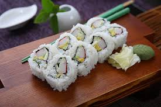

Home
California Roll

Description
The California Roll is a popular sushi roll known for
its fresh, mild flavor and beginner-friendly ingredients.
It typically features imitation crab meat (or real crab),
creamy avocado, and crisp cucumber, all wrapped in seasoned
rice and a sheet of nori (seaweed). Often rolled inside-out
with the rice on the outside and sprinkled with sesame seeds
or tobiko (fish roe), this roll offers a perfect balance of
textures and flavors. It’s a great introduction to sushi for
those new to it, and a favorite choice for casual sushi
lovers everywhere.
Ingredients
- 1 cup sushi rice (cooked and seasoned with rice vinegar)
- 1 sheet nori (seaweed)
- 2–3 sticks imitation crab (or real crab meat)
- 1/4 avocado, sliced
- 1/4 cucumber, julienned (thin sticks)
- Sesame seeds (optional, for garnish)
- Soy sauce (for dipping)
- Pickled ginger (optional, for serving)
- Wasabi (optional, for serving)
Steps
- Place a bamboo sushi mat on a flat surface and cover it with plastic wrap.
- Lay a sheet of nori, shiny side down, on the plastic-covered mat.
- Wet your fingers and spread a thin, even layer of sushi rice over the nori, covering the entire sheet.
- Sprinkle sesame seeds on top of the rice (optional), then flip the nori so the rice faces down.
- Place imitation crab, avocado slices, and cucumber sticks in a line along the center of the nori.
- Using the mat, gently roll the sushi away from you, pressing firmly to shape it into a tight roll.
- Remove the roll from the mat and use a sharp, wet knife to cut it into 6–8 equal pieces.
- Serve with soy sauce, pickled ginger, and wasabi on the side.